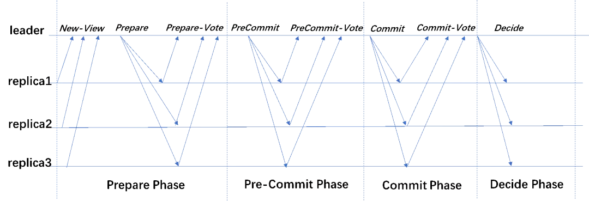
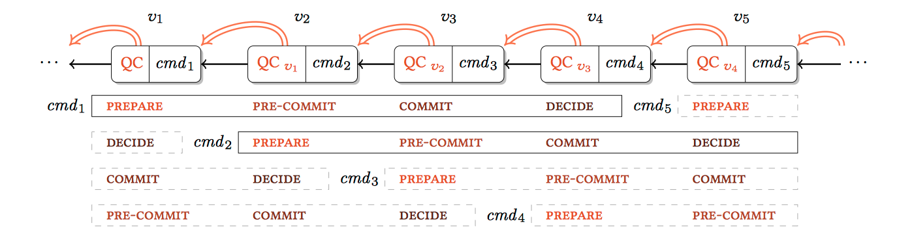
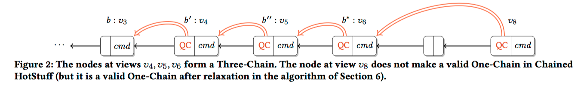

Facebook 的Libra基于HotStuff进行改进，HotStuff可以将网络消息复杂度降到线性级，可在较多节点上进行部署（大于100），吞吐量相对于传统PBFT提升可观，并在数学上证明了安全性。
1. 传统BFT 共识
传统BFT共识存在以下缺陷：
- 需要提前知道所有参与者信息，较难扩容；
- 平方级别的消息传递复杂度；
- 增加大量节点会导致网络拥塞；
- Leader节点会承受整个网络的负载，负载不均衡。
同样，相对于PoX等的共识，有着重要的优势：
- BFT协议速度只和与网络发送的短消息的速度有关，没有额外的能源消耗或等待时间；
- 交易延迟非常小，延迟与网络延迟同数量级；
- 容错率相对于PoX类型高很多。
2. 与传统BFT共识的对比
HotStuff基于一个新的框架，这个框架相比于传统BFT有着很大的不同：
- 采用树/链结构，投票只会投给当前认为主链上扩展的新部分；
- 不是通过链长度来判定主链，而是通过最近一次成功获得大部分投票的块决定；
- view change算法没有特殊情况；
- 工程友好。
3. 摘要与介绍
We present HotStuff, a leader-based Byzantine fault-tolerant replication protocol for the partially synchronous model. Once network communication becomes synchronous, HotStuff enables a correct leader to drive the protocol to consensus at the pace of actual (vs. maximum) network delay—a property called responsiveness—and with communication complexity that is linear in the number of replicas. To our knowledge, HotStuff is the first partially synchronous BFT replication protocol exhibiting these combined properties. Its simplicity enables it to be further pipelined and simplified into a practical, concise protocol for building large-scale replication services.
在摘要中主要说明了HotStuff的两个特别属性：responsiveness、linearity，在网络最大时延时间内完成共识，即低延迟，消息复杂度与节点的数量关系是线性的，即 O(n)。这两种特性在其他部分同步BFT共识协议中是第一次集成在一起，并且在实验部分成功部署了100个节点，TPS和交易延迟与BFT-SMaRt[5]相近，且在leader节点宕机的情况下，能保持线性级别的 view change。
4. 主要HotStuff模型
4.1阶段
4.1.1 Prepare phase
- 新的leader收集n-f个 NEW-VIEW 消息，里面包括了最高的 prepareQC；
- leader根据prepareQC寻找一个highest preceding view 分支，并标记为highQC，因为highQC是获得commit最高的块，它可以断定没有更高的view到达确认状态（safe）；
- leader使用 CREATELEAF 方法在highQC的尾端节点扩展新proposal，建立一个新的图子节点，并附上指向父图子节点的哈希指针；
- 之后leader便将新的proposal放到 PREPARE 消息发给其他所有，proposal里包含了highQC的安全性证明；
- replica节点收到了来自leader的 PREPARE 消息后，节点使用 SAFENODE 方法检测是否接受，如果接受那么replica节点就会发出 PREPARE vote 消息，并签名，发给leader。
4.1.2 SAFENODE predicate
该方法的作用是验证highQC的可靠性：
- safety rule：新的proposal m从现有本地的
lockedQC树节点延伸； - liveness rule：如果proposal m的验证结果 m.justify，即当前node所在的view，对于现在的
lockedQC有更高的 viewNumber； - 如果以上两条有一条为真，那么就检测正确；
4.1.3 PRE-COMMIT phase
- 当leader收到proposal的 n-f 个 PREPARE vote ，将他们聚合（聚合签名）成一个 prepareQC；
- leader将 prepareQC 放入 PRE-COMMIT 消息中，广播出去；
- replica节点收到消息，对消息l进行哈希并签名，放到 PRE-COMMIT vote 发给leader；
4.1.4 COMMIT phase
- 当leader收到了proposal的 n-f 个 PRE-COMMIT vote ，再对这些vote进行聚合成一个 precommitQC；
- leader将 precommitQC 装进 COMMIT 消息中，进行广播；
- replica节点收到消息，投出 COMMIT vote 给leader；
- replica节点从lockedQC变更为precommitQC（为了安全/正确性需要）；
4.1.5 DECIDE phase
- leader收到了 n-f 个 COMMIT vote ，聚合成一个 commitQC，放进 DECIDE message；
- 发送 DECIDE message 给所有其他replica节点；
- replica节点收到了 DECIDE message 后，判断在proposal的 commitQC，执行client commands命令；
- 将执行结果返回给client；
- replica节点增加 viewNumber ，结束这次view；
4.1.6 NEXTVIEW interrupt
- 在所有的阶段，replica都会等待对应viewNumber的消息，使用 NEXTVIEW(viewNumber) 工具判断，如果超时就进行下一个View；
- 如果 NEXTVIEW(viewNumber) 中断了等待，那么replica就会增加当前viewNumber，开始下一个view；
4.1.7 基本流程图

4.2 数据结构
4.2.1 Messages
1 | enum Type{ |
4.2.2 Quorum certificates
翻译为法定证书，一个QC，一个三元组 <type,viewNumber,node>，之后的签名聚合基于这个三元组进行聚合。
4.2.3 Tree and branches
叙述分支冲突、节点冲突的情况。
一个节点（node）包含了：
- Client‘s command
- 指向父节点的哈希指针
replica节点当且仅当节点可以领导(led by)本地分支时才发送消息；当有落后时，可以从其他节点中拉取；
如果两个分支都不是另一个的扩展，则这两个分支是冲突的（conflict）；当两个节点所领导的分支发生冲突，则这两个节点是冲突的。
4.2.4 Bookkeeping variables
主要是记录当前协议的状态的变量：
- viewNumber：记录当前view，初始化为1，并由NEXTVIEW自增；
- lockedQC：记录当前replica节点投COMMIT票最高QC，初始化为空；
- prepareQC：记录当前replica节点投PRE-COMMIT票最高QC，初始化为空；
- replica节点维护一个最高节点（node），该节点所在的分支是有效的。
4.3 协议细节
4.3.1 工具模块
1 | // 构造一个msg |
4.3.2 Basic HotStuff
1 | for curView ← 1, 2, 3, . . . do |
4.4 Safety, liveness and complexity
4.4.1 安全性引理
安全性假设：定义一个quorum certificate \(qc\) 当且仅当以下共识为真时是有效的：
\(tverify(<qc.type,qc.viewNumber,qc.node>,qc.sig)\)
- 对于任意有效的 \(qc_1,qc_2\) ，有 \(qc_1.type=qc_2.type\) 且 $qc_1.node $ 和 $ qc_2.node$ 冲突，那么有 \(qc_1.viewNumber\ne qc_2.viewNumber\) ；
- 定理：如果有两个冲突的节点 \(w,a\) 那么这两个节点不可能同时被commit，即使这两个节点都来自于正确的replica；
4.4.2 活跃性引理
主要是定义两个函数 LEADER、NEXTVIEW。
- If a correct replica is locked such that \(lockedQC = precommitQC\) , then at least \(f + 1\) correct replicas voted for some \(prepareQC\) matching \(lockedQC\).
- 定理：在GST之后，在一段时间内所有replica节点都在一段时间 \(T_f\) 内保持在同一个view中，且leader对于当前view是有效的，那么就能达成共识。
4.4.3 复杂度
在每个阶段，都是由leader进行广播，所有replica节点接受消息，并签上签名返回给leader，leader进行阈值签名聚合，所以消息复杂度都是 \(O(n)\) 。
5. 链式HotStuff
在基本HotStuff中，Leader主节点需要三个阶段来确认一个请求提交。这些阶段都非常相似，除了收集其它副本节点的投票外，大部分没有做多少实际工作。
5.1 基本流程
链式HotStuff （Chained HotStuff）提升基本HotStuff的效用并同时并大大简化其流程。方法是在每个Prepare阶段，都主动地转换视图。具体说来，在链式HotStuff中，对Prepare阶段的投票，由下一个在prepareQC的视图的Leader来收集。同样，依此类推，Pre-Commit和Commit阶段的投票也由与之相应的下一个视图的leader来收集。这样，新Leader在视图v+1的Prepare提议阶段，同时作为视图v的Pre-Commit阶段。而新的Leader在视图v+2的Prepare提议阶段，同时可以作为视图v+1的Pre-Commit阶段，以及视图v的Commit阶段。因为所有阶段的数据结构都一样，因此可以用流水线的方式来提升共识的效率。下图展示了链式HotStuff的基于Basic HotStuff的流水线形式。

视图 \(v_1\), \(v_2\), \(v_3\)作为在\(v_1\)提交的命令cmd1的Prepare，Pre-Commit和Commit阶段。cmd1命令在\(v_4\)里确认。视图\(v_2\),\(v_3\),\(v_4\)作为在\(v_2\)提交的cmd2的三个基础HotStuff的阶段，cmd2在\(v_5\)里得到确认，依此类推。
因此链式HotStuff中，只有两类型的消息，一种是New-View，一种是Generic phase的Generic消息。genericQC实现所有不同阶段的功能。
链式HotStuff中，如果下图，节点 $ b’$ 中的QC直接对应父图节点 \(b\) ，这样形成了One-Chain； 如果在One-Chain的基础上，下一个图节点 \(b''\) 中的QC直接对应 \(b’\) ，这样就形成了Two-Chain，在这个基础上，下一个图节点 \(b^*\) 中的QC直接对应 \(b’’\) , 这样就形成了Three-Chain。显示视图\(v_4\)，\(v_5\)，\(v_6\) 形成了一个Three-Chain。

5.2 链式HotStuff伪代码
1 | procedure createLeaf(parent, cmd, qc) |
参考文献
[1]. Maofan Yin, Dahlia Malkhi, Michael K. Reiter, Guy Golan Gueta, and Ittai Abraham. 2018. HotStuff: BFT Consensus in the Lens of Blockchain. CoRR abs/1803.05069 (2018). arXiv:1803.05069
[2]. Maofan Yin, Dahlia Malkhi, Michael K. Reiter, Guy Golan Gueta, and Ittai Abraham. 2019. HotStuff: BFT Consensus with Linearity and Responsiveness. In 2019 ACM Symposium on Principles of Distributed Computing (PODC ’19), July 29-August 2, 2019, Toronto, ON, Canada. ACM, New York, NY, USA, 10 pages. https://doi.org/10.1145/3293611.3331591
[3]. Facebook Libra 采用的 HotStuff 算法，究竟是怎样一种尤物
[4]. Libra 采用的 HotStuff 算法作者亲述：「尤物」诞生记
[5]. Alysson Neves Bessani, João Sousa, and Eduardo Adílio Pelinson Alchieri. State machine replication for the masses with BFT-SMART. In 44th Annual IEEE/IFIP International Conference on Dependable Systems and Networks, DSN 2014, Atlanta, GA, USA, June 23-26, 2014, pages 355–362, 2014.